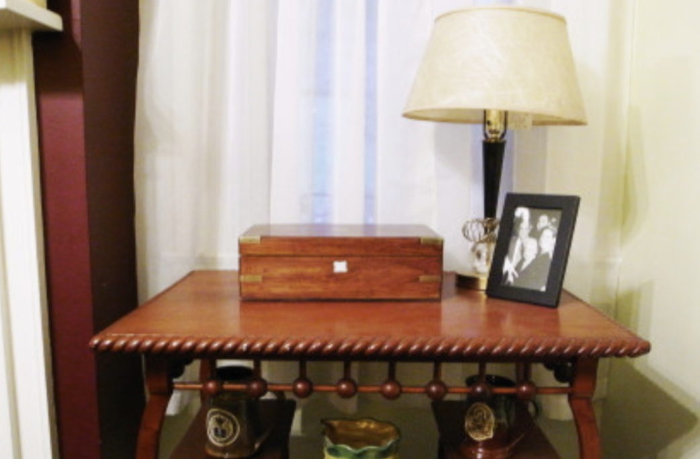
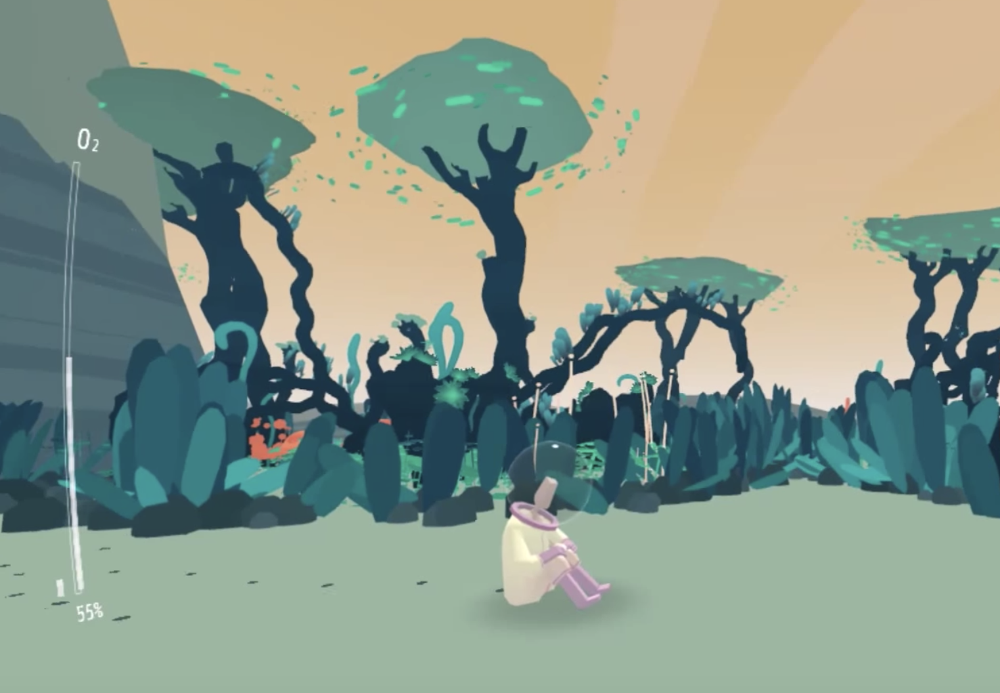

Research Question
WEEK 6 - TUE, OCT 1TH, 2019It seems that we are optimizing our efficiency, but in fact, we ourselves are optimized by time management in turn. I came up with the research questions from my experience and daily observation.The question is that “How to alleviate people’s impatience and anxiety in today’s context of rapid technology and life pace?”. But as I look into my research question and try to conduct some research, I am lost beacuse anxiety and impatience are two different emotions and have different sources.
I did more secondary research and try to break down the question.
I also looked back at the project that inspires me --- SlowGames by Ishac Bertran. A physical video game with a very low frequency of interaction(one move a day), which challenges our memory, capacity of observation and patience in contrast to traditional video games. The reason why it attracted me is exactly its concept of slow interaction which contrasts with prevailing fast response technology.
SlowGames --- A physical video games with a very low frequency of interaction: one move a day.
The Photobox project by Will Odom, explores how slowing down digital photo consumption could create an interaction pace that supports anticipation, reflection, and long-term interaction.
Orchids to Dusk --- Look For A Place To Die In This Persistent Online World.
From articles and research about slow interaction and technologies, I learned that slow technologies can aim to invert values of efficiency in the service of supporting experiences of pause, contemplation, and reflection. So far, design projects based on slow interaction philosophy are focused more on home context and personal experience.
Becoming faster is the general trend, but How to bring mental rest for busy people with slow interaction?